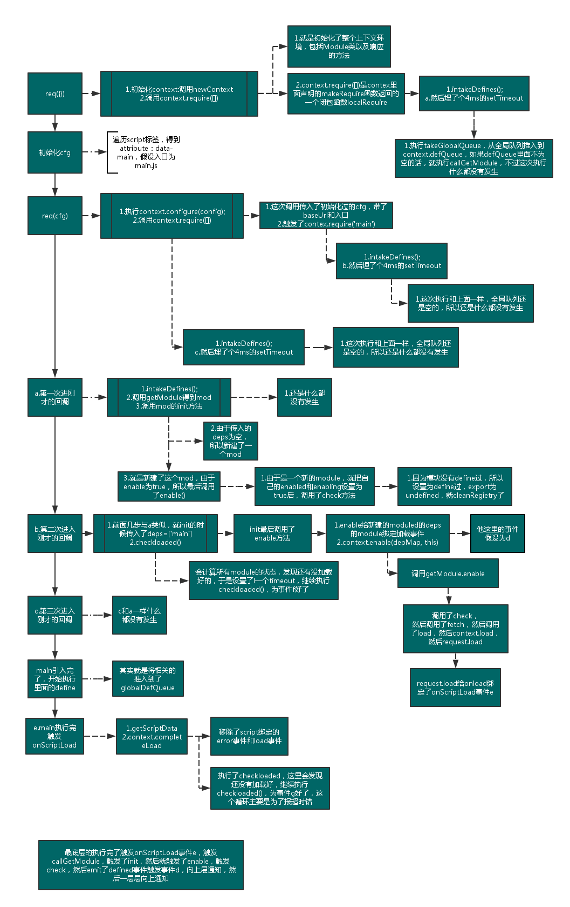

Requirejs源码阅读
接着上文的学习以及尝试实现,准备好好看下源码的实现。
var requirejs, require, define;
(function (global, setTimeout){...}(this ,setTimeout));
整体结构就是放出了3个全局的变量，然后在一个匿名函数中对3个变量进行赋值。这里把this和setTimeout传进去应该是历史原因，怕这些东西被改写
然互看匿名函数的整体的结构：
- 最先申明了一些简写以及使用到的正则以及浏览器属性的判断。
- 然后申明了一些简单的辅助方法，包括一些循环，还有对象的检测。
- 然后是一个主要的方法newContext。这个很长，慢慢看。
- 然后申明了require方法
- 然后调用了req({});进行了最初的初始化
- 然后遍历拿到script，来得到data-main的入口，与我的写法一样
- 然后申明了define方法
- 然后再执行了一次req(cfg);用配置好的cfg
执行的主要流程
主要是就是执行了一次req({});然后初始化了cfg，然后再执行了一次req(cfg)。
这里函数执行的比较复杂，我花了一些时间画了一个图，画的精疲力尽：

图里面其实已经画的很详细了，我的图只是其中一种执行的顺序，简单总结就是
- 第一次req()初始化环境
- 第二次req()开始加载入口的模块
- define函数实际上往全局的队列推入
- 模块加载好了会执行onScriptLoad方法，然后进行一层层的事件通知(注意事件是绑在依赖的模块上的，出发后，执行父模块的回调，然后再emit调用父模块的回调)
- 内部还是有轮询在检测是否加载完的，我个人认为这是在处理error事件，因为整体的执行并不依赖于这个轮询
- 他内部支持commonjs的方式其实就是用个正则表达式来进行检索，然后推入deps正常加载而已。就是个形式而已
## 小的tip nextTick里面的4ms是因为html5的规范要求的;最大值的话是2的32次方-1，如果超过了，会被立即执行。
r.js
其实这个就是个与requirejs一起用的打包以及压缩的工具。他帮助合并了requirejs异步发出的请求，然后还用uglify压缩了一下。
参考：
http://www.cnblogs.com/yexiaochai/p/3632580.html
http://www.cnblogs.com/zhiyishou/p/4770013.html
http://www.nihaoshijie.com.cn/index.php/archives/381